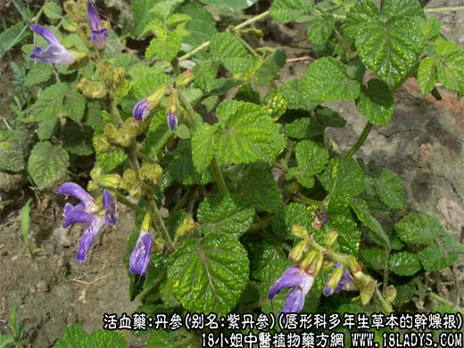
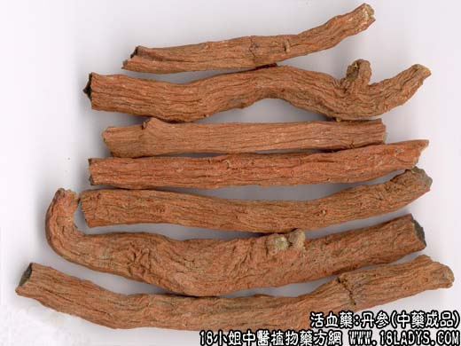
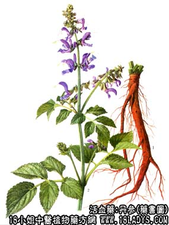

本品为常用中药。始载《神农本草经》，列为上品。《名医别录》又名“赤参”因其色红故名。
别名：紫丹参。
来源：为唇形科多年生草本植物丹参（Salvia miltiorrhiza Bunge）的干燥根。野生活栽培。
植物形态：多年生草本，高30～80厘米，全体密披淡黄色绵毛，茎直立，方形，上部多分枝。叶对生，奇数状复叶，小叶3～5枚，顶端小叶最大，椭圆形或卵形，具钝锯齿缘，轮伞花序，总状排列，花唇形，淡紫色。小坚果长圆形，熟时暗棕色或黑色。其根朱红色。
产地：主产于河北、安徽、江苏、四川等地，全国各地均有分布和生产。
性状鉴别：野生的根茎粗糙，顶端有茎的痕迹，下方生数支圆柱形支根，多万去。全长10～20厘米，直径3～10毫米，反面红褐色或砖红色。有不规则的纵皱，栓皮容易剥落。质轻脆，易折断，断面黄白色，疏松有裂隙显筋脉小店。气微，味甘微苦。以条粗壮，色紫红，无芦头者为佳。
主要成分：含丹参酮甲（C18H12O2）、丹参酮乙（C19H18O2）、丹参酮丙（C19H20O2）、隐丹参酮（C19H20O3），并含维生素E。（注：化学元素数字为缩小并在右下）
功效与作用：活血祛瘀、清热除烦，现已经其作用为：1、扩张血管和降压，动物实验初步正民，丹参能扩张外周血管，降低血压。2、抗菌。对葡萄球菌、大肠杆菌、变形杆菌有强力的抑菌作用；对伤寒杆菌、痢疾杆菌有一定抑菌作用。其酒精浸剂在1：100000浓度下仍能抑制结核菌，动物试验丹参对小白鼠实验性结核病有疗效。临床观察还有镇静、安神、镇痛等作用。
附：近年来的动物实验初步发现丹参显著延长艾氏腹水癌小鼠的生存日，似具有一定的抗癌作用，但在临床上还没有证实丹参有抗癌价值，虽然在某些治癌复方中有应用丹参，但不是作为上药。
炮制：切片，生用。
性味：苦，微寒。
归经：人心，肝经。
功能：活血通络，凉血消肿，除烦清心。
主治：痛经，经闭，腹部肿块，瘀血作痛痈肿疮毒，烦热不安。
临床应用：1、用于治疗心脉阻滞所致的心绞痛，取其有疏通瘀塞、扩张血管的作用。轻症者配檀香、砂仁等，方如丹参饮。又可配蒲黄、五灵脂、郁金等，研末冲服。血瘀而见阴虚者，配生脉散，方如丹参生脉散加味。又据报道，有心肌梗塞抢救中，用丹参注射液静脉滴注，有较好效果，部分病员的心电图心肌缺血的情况迅速好转，一些病例有血脂下降现象。
2、用于治疗气滞血瘀所致的月经困难、痛经、产后恶露不下，瘀滞作痛，可单味研末（即丹参散）冲服，每服6g，陈酒或温开水送下，或配桃仁、归尾、红花等，水煎服。
3、用于治疗心血不足所致的神经衰弱，有心悸、失眠、烦躁不安，可用丹参12g，水煎粉早晚服，配紫石英、龙骨、牡蛎、熟枣仁等，水煎服。又可用成药补心丹（含党参、丹参、玄参、朱砂、五味子、酸枣仁、柏子仁、远志、当归等）。
4、用于治疗肝郁胁痛，适宜于慢性肝炎和早期肝硬变有肝脾肿大、肝功能差者，取其有祛瘀之力，常用丹参30g，配糯稻根30g、红糖30g，5碗水煮成2碗，分2～3次温服，对降低谷丙转氨酸似有一定帮助。至于治急性传染性肝炎，虽也有人用丹参，但本品种就是较适宜用于肝病的慢性期。
5、用于治疗血栓塞性脉管炎，适宜于病情较轻者，常配当归、元参、鸡血藤等，方方如丹参通脉汤。
6、用于治疗高血压，取其有降压和镇静作用，可配鸡血藤、磁石等。
使用注意：1、前人认为丹参能祛瘀血、生新血，既能行血，又能养血，故誉之为“一味丹参，功同四物”。这个评价是过高了，实际上，从活血祛瘀血来说，丹参与四物汤的作用下爱你公司之处，但四物汤在活血的同时，又有补血作用，而丹参却没有补血作用。
2、本品药性平和，但仍有个别病例用后会引起出血时间和凝血酶元时间延长，故读一出血性疾病的患者，丹参亿人慎用。
3、本品习惯上忌与藜芦配伍。
用量：祛瘀活血一般用6～15g，大剂15~30g。治脉管炎重用至30~60g。但有出血倾向者不宜用大剂量。
处方举例：1、丹参饮（《医宗金鉴》）：丹参30g，檀香3g，砂仁3g，水煎服。
2、丹参生脉散加味：丹参15g，党参19g，麦冬18g，五味子6g，山萸肉12g，糯稻根24g，生地18g，水煎服。
3、丹参通脉汤：丹参30g，鸡血藤30g，当归18g，元参30g，甘草30g，水煎服。
注：全国大多数地区习用的丹参，为正文所述的野生品，与历代本草记述相符。但栽培的丹参，常因气候土壤不同，但其性状变异；再就是同科不同种植物丹参的根，差异更大，商品名称也不相同。现分讲如下：
1、川丹参（《四川中江等地栽培品》）：原植物同丹参。其特征：主根明显，分歧少，全体较野生品粗大肥实，直径5～15毫米。表皮细红褐色，带油润具细纵皱纹，栓皮不易剥落，质地坚实。折断面黄褐色，肉质，少纤维。气弱，味微甜。
2、甘肃丹参：为唇形科植物甘西鼠及褐毛丹参的干燥根。根呈圆锥形，多数支扭结呈绳索状，长15～25厘米或更长，直径1～6厘米，顶部可见并列的圆柱形茎痕，表面红褐色有扭曲错综的纵向沟纹。质松。易折断，断面疏松，外部红褐色，木心黄白色，点状，散列于皮部之间。气微，味淡微涩。此种丹参，原在甘肃，宁夏，青海等地习用，近年京津也使用。因其形状似瓣子秦艽而色红，故有的地区误秦艽药用，应予纠正。此外，还有云南产的滇丹参、三叶丹参、白背丹参及小丹参等，均为地产地销。
3、本品反藜芦。